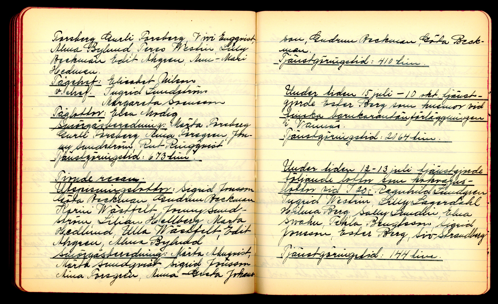
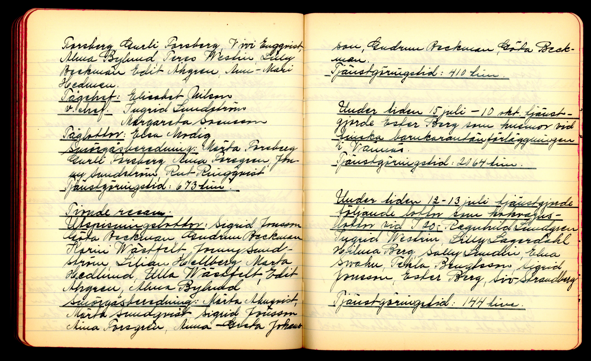
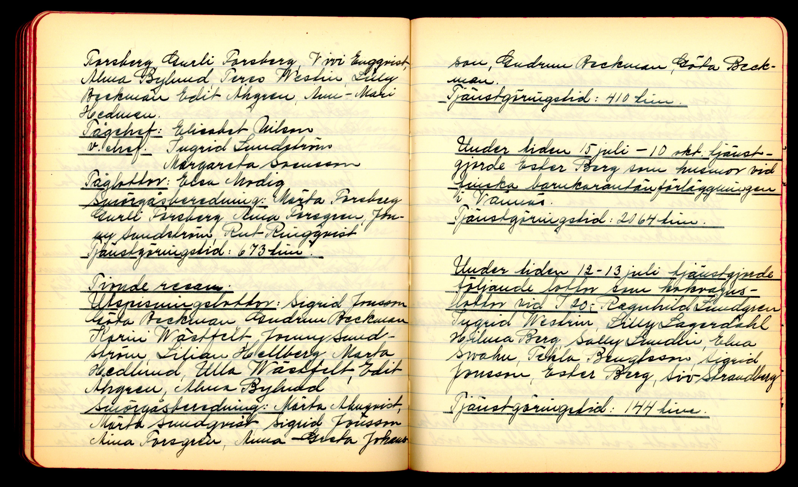
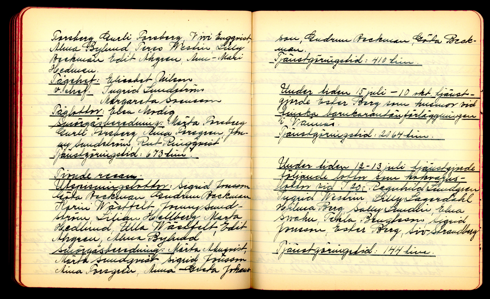

 

Titel: Fälttjänst U.S.L.K Oktober 1939— Tjänstgöringsdagbok
Beskrivning:
Under andra världskriget var många kvinnor, genom Svenska Lottakåren, aktiva inom försvaret.
Förutom stödinsatser för totalförsvaret bistod de olika grenarna av orginisationen sina lokala kommuner
med beredskap och krishantering.
Man kom att börja förlita på lottorna i fråga om många av de praktiska uppgifter som ligger bakom varje mobilisering,
exempelvis utspisning och pengainsamling.
I Umeå nedtecknade den lokala kåren sina aktiviteter år för år i tjänstgöringsdagböcker.
I dessa noterades namn, platser och datum kopplade till Lottakårens arbete.
Ett av de stora händelserna var mottagandet av finska flyktingbarn hösten 1944.
På denna hemsida har vi digitaliserat och transkriberat utdrag ur dagböckerna som beskriver lottornas insatser under denna tid,
både som en diplomatisk transkription som behållit den ungeförliga formen texten hade i originalet och en mer tillredd lästext.
För den som vill se samtliga bilder i större format finns ett galleri till förfogande.
Den som vill ha en snabb översikt av personerna som nämns i det transkriberade materialet, hänvisas till listan på lottor.
Detta digitaliseringsprojekt är utfört inom ramen för kursen
Digitalisering för bevarande och tillgänglighet vid Högskolan i Borås våren 2024.
Om Lottakåren:
Grundad 1924, Sveriges försvarsorganisation för kvinnor.
Kårens syfte är att rekrytera och utbilda kvinnor till uppgifter inom det svenska totalförsvaret.
Utbildade lottor har till uppgift att verka för ett tryggare samhälle genom förebyggande arbete i fredstid
och samhällsinsatser i kris- eller krigstid.
Organisationen är ideell och partipolitiskt obunden och medverkan är frivillig.
Antalet lottor ökade markant under krigsåren, och kåren blev för en tid framåt enda sättet för kvinnor att arbeta inom försvarsmakten.
Förvaring:
Folkrörelsearkivet i
Västerbotten
Helena Elisabeths väg 3 Gammlia
903 42
Umeå
Sverige
Om arkivet: Folkrörelsearkivet i Västerbotten är ett länsarkiv med uppgift att samla in och förvara handlingar från Västerbottens föreningar och folkrörelser.
Material från cirka 9000 arkivarier förvaras på plats på 5000 hyllmeter, vilket gör arkivet till det största folkrörelse- och föreningsarkivet i Sverige.
Folkrörelsearkivet innehåller handlingar från de traditionella folkrörelserna; arbetar- och fackföreningsrörelsen, frikyrkorörelsen, idrotten, samverkans- och nykterhetsrörelsen,
men också ett omfattande föreningsmaterial från områden med anknytning till folkbildning, kultur och fritid samt byarkiv, familje- och personarkiv.
Upphov: Umeå Lottakår
Transkription gjord av: Folkrörelsearkivet i Västerbotten, samt Clara Berndes, Malin Färdig och Sofia Larsson
Bildfångst av: Katherine Knox Beler och Malin Färdig